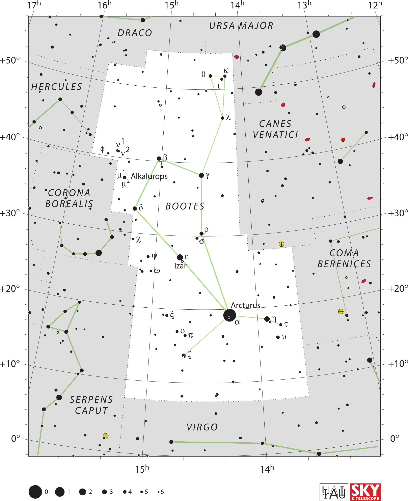

<div data-role="page" id="bootes" data-theme="a">

	<div data-role="header">
		<a href="#home" data-icon="back" data-rel="back">Back</a>
		<h1>Bootes</h1>
		<a href="#home" data-icon="home">Home</a>
	</div>

	<div data-role="content">
		<div class="cssImageMap">
			

			<a href="hercules.html" class="constellation" data-side="left"
				data-x="150" data-y="390" data-width="300" data-height="70"></a>

			<a href="draco.html" class="constellation" data-side="left"
				data-x="540" data-y="130" data-width="250" data-height="70"></a>

			<a href="ursaMajor.html" class="constellation" data-side="right"
				data-x="1025" data-y="85" data-width="400" data-height="70"></a>

			<a href="canesVenatici.html" class="constellation" data-side="right"
				data-x="1200" data-y="570" data-width="350" data-height="140"></a>

			<a href="comaBerenices.html" class="constellation" data-side="right"
				data-x="1550" data-y="1210" data-width="330" data-height="140"></a>

			<a href="virgo.html" class="constellation" data-side="right"
				data-x="880" data-y="2080" data-width="250" data-height="70"></a>

			<a href="serpensCaput.html" class="constellation" data-side="left"
				data-x="330" data-y="1940" data-width="250" data-height="140"></a>


			<a href="coronaBorealis.html" class="constellation" data-side="left"
				data-x="210" data-y="920" data-width="300" data-height="140"></a>

		</div>

		<div id="here">
			<h2>Bootes</h2>

			<p>Image Credit: IAU and Sky & Telescope magazine (Roger Sinnott
				& Rick Fienberg)
		</div>
	</div>
</div>
